Quick References: FAV-THING Trendy Mobile
트렌디한 미디어 컬렉션 앱은 짙은 배경, 포스터 중심 레일, 빠른 검색, 명확한 저장 액션, 촘촘한 라이브러리 탭 조합이 가장 강합니다.
Current State
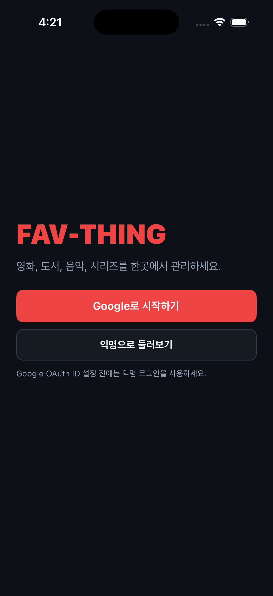
Patterns
1. Library As A Dense Command Center
Spotify, Tidal, Google Photos는 라이브러리를 단순 목록이 아니라 카테고리, 최근 활동, 빠른 액션이 모인 홈으로 씁니다. FAV-THING도 각 탭 상단에 저장 수, 최근 카드, 검색을 함께 두는 편이 좋습니다.
┌──────────────────────────┐ │ FAV-THING [share][+] │ │ 영화 12 · 평점 4.2 │ │ [검색................] │ │ ┌ poster ┐ 오늘의 픽 │ │ └────────┘ meta + rating │ │ [전체] [평점] [최근] │ │ item row / item row │ └──────────────────────────┘
2. Search First, Then Save
Fever, Max, Audible은 검색 입력과 결과 카드를 화면의 주요 행동으로 배치합니다. 추가 모달도 API 검색 결과가 먼저 보이고, 선택 후 수동 필드를 보완하는 흐름이 어울립니다.
3. Login With Visual Context
ChatGPT식 미니멀 인증은 깔끔하지만, ReelShort/Poshmark처럼 배경에 콘텐츠 조각을 깔면 앱의 목적이 즉시 보입니다. FAV-THING은 영화/책/음악/시리즈 타일을 로그인 화면 상단에 보여주는 쪽이 맞습니다.
4. Collections Need A Shareable Identity
Perplexity와 Artsy는 컬렉션을 탭과 묶음 미리보기로 다룹니다. 공유 조회 화면도 단순 userId 조회보다 시각적인 저장 목록 피드처럼 보여야 합니다.
References
Pattern A: Library Density
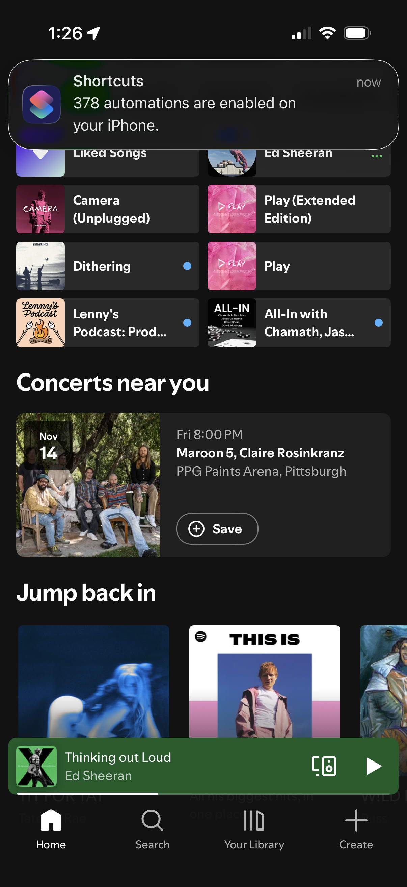
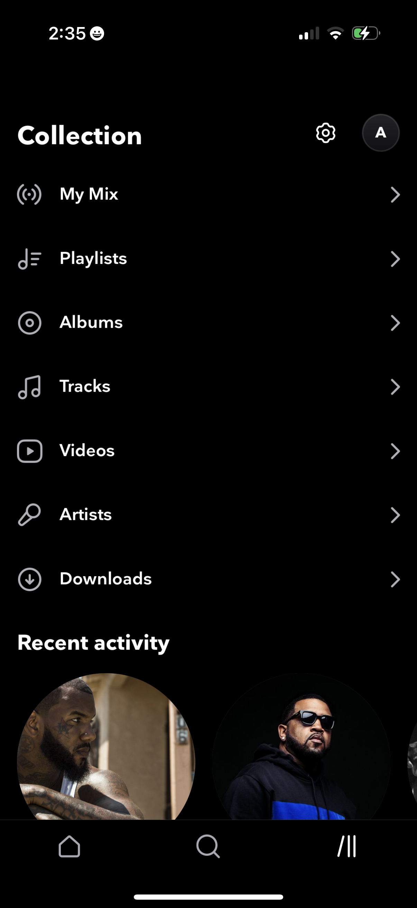
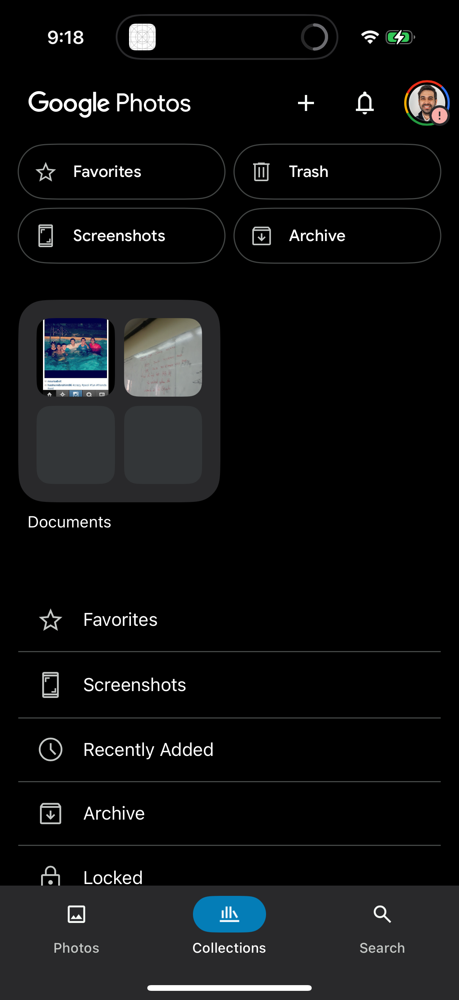
Pattern B: Discovery And Search
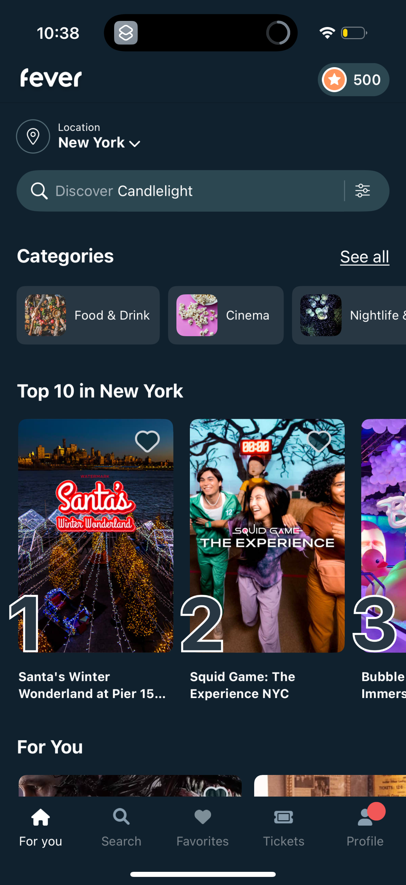
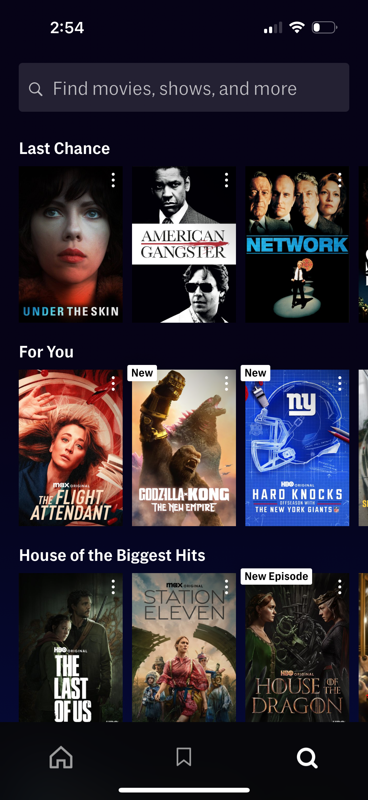
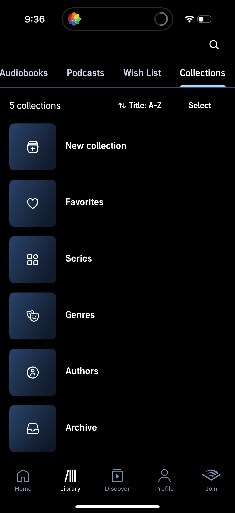
Pattern C: Onboarding
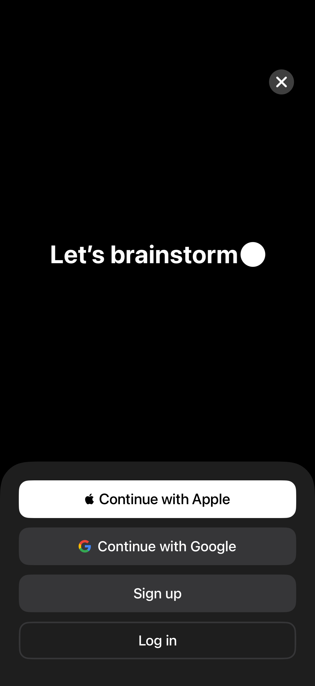
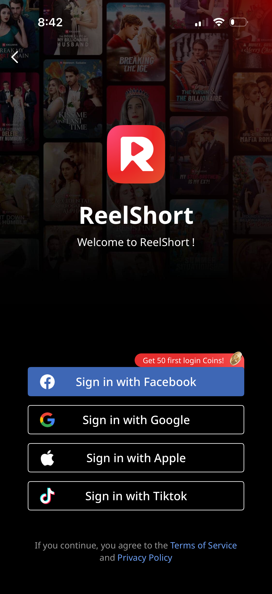
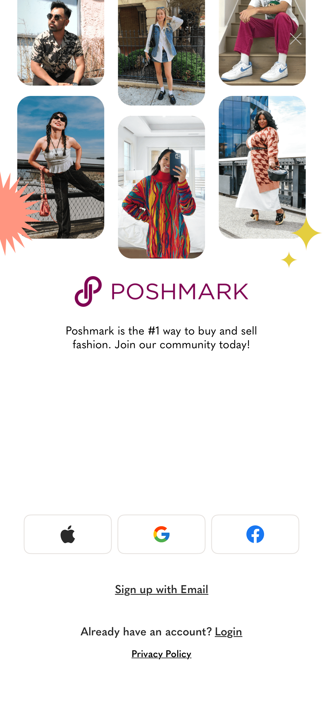
Pattern D: Shareable Collections
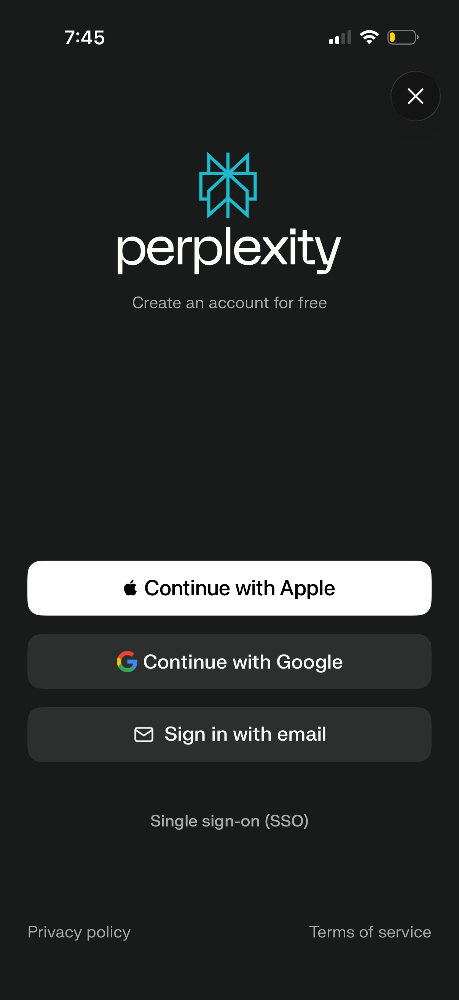
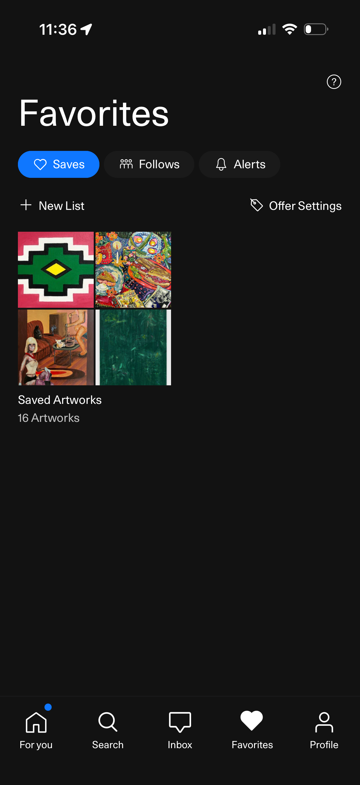